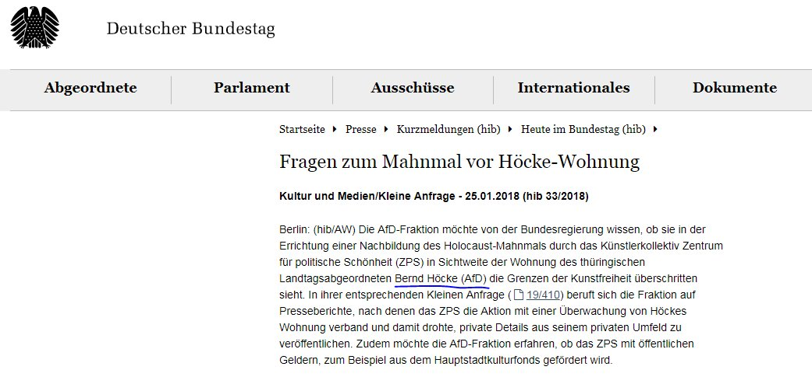

Was sind eigentlich diese Fake News, von denen man die letzten Jahre so viel hört? Wenn man es Wort für Wort aus dem Englischen übersetzt, heißt es etwa so viel wie „falsche Nachrichten“. Was ja nicht wirklich falsch ist, allerdings auch nicht einhundert Prozent der Wahrheit entspricht. Auch wenn der Begriff, laut Merriam Webster, schon 1890 von der Tageszeitung Cincinnati Comercial Tribune in einem Artikel mit der Überschrift „Secretary Brunnell Declares Fake News About His People is Being Telegraphed Over the Country“ verwendet wurde, gehen die Meinungen zu einer Definition auseinander. Was wahrscheinlich daran liegt, dass der Begriff Fake News erst seit dem Wahlkampf von Donald Trump wieder übermäßig Verwendung findet. Grundsätzlich ist man sich aber einig, dass Fake News, im Groben, gezielt eingesetzte Unwahrheiten oder falsch dargestellte Nachrichten sind.
Mit der Erfindung der Druckpresse von Johannes Gutenberg um das Jahr 1450 wurde nicht nur der Buchdruck revolutioniert, sondern auch die Verbreitung von Informationen generell erleichtert. Dadurch wurde es natürlich auch einfacher falsche Informationen weiter zu verbreiten. So kam es 1835 zur ersten großen „Fake News“ Story, „The Great Moon Hoax“. Auch wenn sie damals natürlich nicht mit Fake News beschrieben wurde. Im August 1835 veröffentlichte die New Yorker Zeitung „The Sun“ insgesamt sechs Artikel darüber, dass anscheinend eine Zivilisation aus Fledermausmenschen auf dem Mond entdeckt wurde. Diese Artikel beschrieben das Leben auf dem Mond mit immenser Genauigkeit und wurden mit Bildern abgedruckt.
Mit der Erfindung und Verbreitung des Radios und des Fernsehens im 20. Jahrhundert entstanden auch Satiresendungen, welche, auch in heutiger Zeit noch, immer wieder als wahr aufgefasst werden. Auch wenn einige Satirenews sich Mühe geben nicht als Satire enttarnt zu werden aufgrund eines Experimentes o. Ä., werden auch regelmäßig "Nachrichten" von etablierten Satiremagazinen oder Sendungen als wahr aufgenommen.
Und natürlich im 21. Jahrhundert mit der Verbreitung des Internets, stieg die Menge an Falschinformationen durch den Fakt, dass jeder einen „Newsblog“ gründen kann, immens an. Während des Wahlkampfes in den USA schossen hunderte „Newsportale“ aus dem Boden. Das Ziel dieser Seiten war nie wirkliche Nachrichten zu Berichten, sondern nur „Pro-Trump“ Fake News zu verbreiten und damit Geld zu verdienen. Diese Seiten wurden hauptsächlich von Studenten aus Mazedonien betrieben, welche sich einen Spaß daraus machten und noch dazu eine Menge Geld verdienten.
Die Verbreitung von Fake News findet zum Großteil in den sozialen Medien statt. Auch wenn die Meldungen selbst meist nicht auf diesen Seiten verfasst werden, werden sie auf Facebook, Twitter und Co. mit Followern und Freunden geteilt. Oft dauert es nur wenige Stunden, bis mehrere tausend Leute den Beitrag geteilt haben. Die Autoren dieser Artikel und Beiträge müssen sich oft nicht einmal Mühe geben, ihre Lügen zu verschleiern, wichtig ist nur den Vorstellungen der Zielgruppe gerecht zu werden.
Bei soziale Medien wie Google (YouTube), Facebook und zu geringen Teilen auch Twitter arbeitet immer ein Algorithmus im Hintergrund, welcher entscheidet, was man sieht und was nicht. Facebook hat schon vor Jahren eine chronologische Startseite über Bord geworfen. Stattdessen sieht man die Beiträge nach „Relevanz“ sortiert. Welche Beiträge relevant sind und welche nicht, entscheidet auch ein Algorithmus, eine Maschine. Dieser Algorithmus, diese Maschine, wird von einer gewinnorientierten Firma (Facebook, Google, etc.) programmiert und da alle diese Firmen sich hauptsächlich von Werbung finanzieren, ist dieser Algorithmus darauf ausgelegt dich so lange wie möglich auf ihrer Seite zu behalten. Um das zu erreichen wird jedes einzelne Profil analysiert. Jeder Like, jeder geteilte Beitrag, einfach alles und dann wird man überhäuft mit allem was auch nur im Entferntesten das Interesse des „Opfers“ wecken könnte.
Wolfgang Schweiger und eine Gruppe von Forschern der Universität Hohenheim erstellten ein gefälschtes Nachrichtenportal, auf dem sie unter anderem Artikel wie „Flüchtling schnappt Deutschem den Job weg“, „Grüne wollen das Café ‚Mohrenkopf‘ wegen des politisch inkorrekten Namens schließen“ und „Gratis-Sex für Asylanten – Landratsamt zahlt“ publizierten. Diese Artikel wurden absichtlich mit offensichtlichen Fehlern versehen. Zum Beispiel sollen sich die Ereignisse des „Gratis-Sex“ Artikels im Ort Bad Eulen abgespielt haben. Bad Eulen existiert in Wirklichkeit aber nicht. Allerdings war das nicht von Relevanz für die Leute, die den Artikel fleißig geteilt haben. „Wir haben einen Blog eingerichtet, einen wohlgemerkt alternativen Blog. Dieser Blog hieß ‚Der Volksbeobachter.de‘, mit einer absichtlichen Nähe zum ‚Völkischen Beobachter‘ der Nazis. Das haben wir auch deswegen gemacht, weil wir auch mal sehen wollten, inwiefern überhaupt die Quelle, die da in den sozialen Netzwerken verbreitet wird, eine Rolle spielt. Und man hat gesehen: Darauf hat sich überhaupt keiner bezogen. Keiner hat gesagt, ‚Volksbeobachter.de, das ist ja krass, das müssen Nazis sein!“(Wolfgang Schweiger, Interview mit deutschfunk.de, 2018-12-15). Schweiger und sein Team haben, um den Artikeln einen Kickstart zu geben, vier Fake-Profile erstellt und diese so authentisch wie möglich aussehen lassen. Mit diesen Profilen haben sie dann die Artikel in, wie er selbst sagt, „Flüchtlingskritischen Facebook-Gruppen“ geteilt. Und genau diese Facebook-Gruppen und Informationsblasen machen das Internet bzw. Internet News so anfällig für Fake News. Die Informationsblasen, die durch den regelrechten Informationsüberfluss entstehen. Man kann sich im Internet zu jeder Zeit, über tausende verschiedene Quellen, zu Geschehnissen aus aller Welt informieren. Dass man sich dadurch überwältigt fühlt und sich eine Auswahl an Informationsquellen zusammenstellt, ist der logische nächste Schritt. Problematisch ist das allerdings, wenn man nur noch Fake News von rechten Nazi Facebook-Gruppen bekommt.
Bei den Unmengen von falschen Informationen, Halbwahrheiten und manipulierenden Texten und Bildern im Internet wird die Bekämpfung von Fake News immer wichtiger. Dabei spielen neben den Medien (Öffentlich-Rechtliche, Zeitungen, Fernsehsender etc.) selbst noch weitere Organisationen, Unternehmen und die Politik eine Rolle. Beispiele dafür, was die einzelnen Akteure gegen Fake News tun und was jede/r Einzelne zur Bekämpfung von falschen Informationen beitragen kann, gibt es hier.
Der Online-Auftritt des deutschen TV-Senders ARD, tagesschau.de, startete im April 2017 faktenfinder.tagesschau.de. Die RedakteurInnen des Portals suchen einerseits nach noch nicht geklärten Gerüchten, andererseits nach Meldungen, über die sonst nicht berichtet worden wäre, weil sie sich als falsch herausgestellt haben. Diese Meldungen werden richtiggestellt und veröffentlicht. Das soll vor allem in Wahlkampfzeiten für die NutzerInnen hilfreich sein.
Zum Faktenfinder
Das Zweite Deutsche Fernsehen (ZDF) in Form des Magazins „frontal21“ gibt Tipps, wie man Fake News entlarven kann. Im Video-Toolkit „Anleitung: Tipps um Fake Tweets zu entlarven“ wird erklärt, wie UserInnen dubiose Tweets auf ihre Richtigkeit prüfen und entlarven können. Dabei wird u.a. gezeigt, wie man die Geburtsstunde von Bots und deren erste Spuren im Netz erkennen kann, fragwürdigen Accounts ein Gesicht geben und die Aktivität eines Bots erkennen.
Zum Bericht
Die deutsche Wochenzeitung „Die Zeit“ startete Anfang 2017 auf zeit.de die Serie „Fakt oder Fake“. In diverse Artikeln werden Zahlen und Daten analysiert und erklärt („Wird jeder Zehnte arbeitslos?“) Gerüchte und Mythen aufgeklärt („Sind gemischte Teams wirklich erfolgreicher?“) oder Maßnahmen und Aussagen von Politikern und Personen des öffentlichen Lebens auf ihren Wahrheitsgehalt überprüft („Die 250 Euro-Rechnung des Martin Schulz“).
Zur Serie
Was Politik, Medien und soziale Medien nur unzureichend in Angriff nehmen, wurde für diverse Plattformen zur Chance, in diese Lücke zu preschen. In den letzten Jahren sind vor allem in Österreich zahlreiche Plattformen entstanden, die sich auf das Aufdecken von Falschinformation spezialisiert haben. Einige davon stellen wir hier vor.
Das Ziel von "Fakt ist Fakt" ist die Überprüfung von Aussagen von in der Öffentlichkeit stehenden Personen, in erster Linie Politikern auf deren Wahrheitsgehalt. NutzerInnen können auch Aussagen, die sie für falsch oder kontrovers halten, melden. Diese werden dann von den RedakteurInnen überprüft
www.faktistfakt.com
"Mimikama" hat sich auf der Bekämpfung von Internetmissbrauch, Internetbetrug und Falschmeldungen verschrieben und sich dabei auf die sozialen Medien, in erster Linie Facebook, Twitter und WhatsApp, spezialisiert. Zu den Schwerpunkten in der Arbeit von „Mimikama“ zählt das Beantworten von NutzerInnen-Meldungen. Diese werden geprüft, recherchiert und die aus den Recherchen gewonnenen Erkenntnisse dann auf der Website veröffentlicht.
www.mimikama.at
„Kobuk“ ist ein österreichischer Medien-Watchblog von Wiener Publizistik-Studierenden (Online-Journalismus) sowie ständigen AutorInnen, der 2010 von Helge Fahrnberger gegründet wurde. Unter dem Motto „Wir lesen Zeitung und schauen fern“ hat sich der Blog auf Medienkritik und falsche oder irreführende Informationen in Medien, insbesondere in Zeitungen, spezialisiert.
www.kobuk.at
Satire ist eine zugegebenermaßen unkonventionelle Art und Weise, gegen Fake News vorzugehen. Doch die Medaille der Satire hat zwei Seiten: Auf der einen kann sie dabei helfen, Menschen für Themen zu sensibilisieren, infolgedessen vorgefertigte Meinungen aufzuweichen, die Blickwinkel des Publikums zu verändern und damit indirekt oder direkt falsche Information aufzudecken. Auf der anderen besteht bei satirischen Beiträgen die Gefahr, dass sie ernst genommen werden oder nicht als Satire erkannt werden und somit selbst Fake News produzieren.
Dass Satire und insbesondere Satire-Sendungen im Fernsehen dazu taugen, Fake News in die Welt zu setzten und vor allem zu verbreiten, zeigt ein Beispiel der deutschen „Heute-Show“ aus dem Jahr 2015. Im Jahr 2015 tauchte ein Video auf, in dem der deutsche Politiker Björn Höcke, der für die „Alternative für Deutschland (AfD)“ im Thüringer Landtag sitzt, sich darüber empörte, dass ihn die Thüringer Allgemeine in einem Bericht fälschlicherweise „Bernd“ statt „Björn Höcke“ genannt hatte.
Die ZDF-Satire-Sendung „Heute Show“ thematisierte dieses Video in ihrer Sendung vom 09. Oktober 2015 und nannte den Politiker fortan nur noch „Bernd Höcke“.
Was als harmloser Scherz begann, führte in den nächsten Monaten und Jahren dazu, dass vermehrt auch seriöse Medien den AfD-Politiker als „Bernd Höcke“ bezeichneten. Am 19. April 2017 schaffte es der Running Gag der „Heute-Show“ bis in die Hauptnachrichtensendung des Zweiten Deutschen Fernsehens (ZDF), das „heute journal“. Am 25. Jänner 2018 nannte der Deutsche Bundestag auf seiner offiziellen Website den thüringischen Landtagsabgeordneten ebenfalls „Bernd Höcke“. Damit hatte es die „Heute Show“ endgültig geschafft.

Auf der anderen Seite kann Satire auch Fake News öffentlichkeitswirksam aufdecken, was vor allem die deutsche Satire-Show „Die Anstalt“ immer wieder zeigt. Die Sendung vom 25. September 2018, die grundsätzlich das Thema „Zuwanderung und Asyl“ aufgriff, ist ein Musterbeispiel dafür, wie Satire direkt Fake News bekämpfen kann. Mithilfe der zuvor erwähnten Schautafel decken die beiden Satiriker den sogenannten „BAMF-Skandal“ auf (BAMF = Bundesamt für Migration und Flüchtlinge).
Grundsätzlich geht es bei dem "Skandal" um die frühere Chefin der BAMF-Außenstelle Bremen und ihre angbelichen Verfehlungen. Die ganze Tafelnummer im Video:
Die Satire-Sendung „Die Anstalt“ wird einmal monatlich bzw. acht Mal im Jahr (u.a. aufgrund einer Sommerpause) im Zweiten Deutschen Fernsehen (ZDF) ausge-strahlt. Gemeinsam mit immer wechselnden Gästen behandeln die beiden Satiriker Max Uthoff und Claus von Wagner auf kabarettistische Art und Weise jeweils ein Thema pro Sendung. Dabei nehmen sich Uthoff und von Wagner regelmäßig eine Schautafel zu Hilfe, mit der sie unter anderem aktuelle Entwicklungen, Machtverhältnisse und (politische) Skandale übersichtlich aufschlüsseln.
Das wahrscheinlich bekannteste Beispiel für Fake News trägt den Namen „PizzaGate“. Während des US-Wahlkampfes 2015/2016 wurde die Präsidentschaftskandidatin Hillary Clinton mit der Hilfe von gezielten Falschmeldungen beschuldigt, einen Kinderpornografie-Ring in einer Pizzeria in Washington zu betreiben. Zahlreiche Artikel im Internet unterstellten Clinton Kinder gekidnappt, gequält und zu Pornografie gezwungen zu haben.
Den Falschmeldungen rund um „PizzaGate“ wurde vielfach Glauben geschenkt. Als Folge dessen erhielten der Inhaber der besagten Pizzeria „Comet Ping Pong“, James Alefantis und seine Mitarbeiter eine Vielzahl an Morddrohungen und hasserfüllten Kommentaren auf ihren sozialen Netzwerken. Außerdem stürmte ein 28-jähriger Amerikaner bewaffnet das Lokal, um die angeblich gefangen gehaltenen Kinder zu befreien.
Die vermeintlichen Straftaten von „PizzaGate“ sind zum Glück völlig frei erfunden. Ihren Ursprung fanden diese Fake News auf der Enthüllungsplattform „WikiLeaks“. Dort wurden E-Mails zwischen dem Pizzeria-Besitzer James Alefantis und Clintons Wahlkampfmanager John D. Podesta veröffentlicht. Nutzer der Website „4Chan“ interpretierten in den E-Mails verwendete Begriffe wie „Pizza“ oder „Sauce“ als Codewörter für pädophile Aktivitäten und brachten darauf basierend die Fake News in Umlauf.
Diese Meldung ging ebenfalls während des US-Wahlkampfes im Internet viral. Papst Franziskus wurde unterstellt, sich in einem offiziellen Statement klar für Präsidentschaftskandidat Donald Trump ausgesprochen zu haben. Er soll ihm angeblich sogar seine Unterstützung zugesichert haben.
Die Nachricht wurde jedoch schon bald als „Fake“ identifiziert. Der Papst hat sich nie zu einem der beiden Kandidaten geäußert. Dennoch handelt es sich bei diesem Beispiel um das erfolgreichste Exempel von Fake News im gesamten US-Wahlkampf 2015/2016. Auf Facebook erreichte die Falschmeldung rund 960000 Interaktionen, also Likes, Shares und Kommentare.
Fake News machen auch vor Österreich nicht Halt. Im Jahr 2016 wurde der damalige Bundespräsidentschaftskandidat Dr. Alexander van der Bellen im Zuge des Wahlkampfes zum Opfer von Fake News. Ihm wurde nachgesagt, an den schweren Krankheiten Krebs und Demenz zu leiden. Van der Bellen reagierte auf das Gerücht mit der Offenlegung seiner Arztbefunde und entband seinen Arzt sogar der ärztlichen Schweigepflicht, damit dieser seine Gesundheit offiziell bestätigen konnte.
Urheber der Fake News war der rechtsextreme deutsche Blog „Politically Incorrect“, der einen Brief an das Bezirksgericht Innere Stadt veröffentlichte. Der Verfasser dieses Briefes ist bislang unbekannt. Der Blogbeitrag wurde noch am Tag seiner Veröffentlichung von zahlreichen Nutzern auf Facebook geteilt und erreichte auf diese Weise mehrere hunderttausend Personen.
{kind=link}